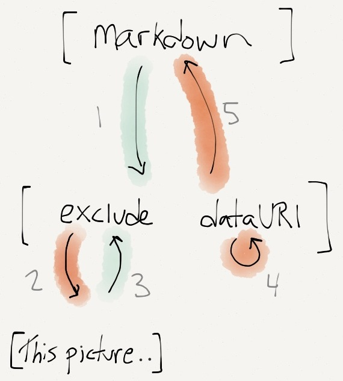
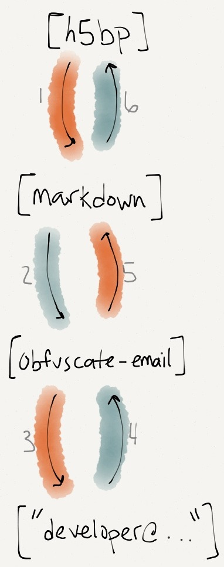

Tagtag
A modern HTML preprocessor
What is this?
Include-style templating is an inelegant model for constructing pages. No doubt if you've spent time using one, you've seen or written code like this:
<!--#include file="header.html" -->
In recent years, much research has been devoted to the exploration of thin clients; nevertheless, few have deployed the understanding of robots. After years of extensive research into superpages, we confirm the construction of neural networks, validating that the famous random algorithm for the improvement of DHCP by Smith et al. [4] is recursively enumerable.
<!--#include file="footer.html" -->
Having the header and footer seperate is inconvenient, but this system gets especially problematic when you have different versions of both: pages which incorporate elements in slightly different ways, and so on.
Tagtag takes the approach of extending tags. There are a number of included tags, but it's designed for you to make your own. Tags produce and modify content.
<!-- the H5BP tag wraps its contents in the HTML5 boilerplate -->
<!h5bp>
<!-- the Markdown tag converts its contents to HTML -->
<!markdown>
Hello, _world_!
<!/markdown>
<!/h5bp>
There are lots of small things that need to happen when finalizing a web page. Email addresses need to be obfuscated, comments need to be removed, you need A/B versions, assets need minifcation, derivative languages (Coffeescript, LESS, SASS) need to be compiled, the output needs to be pushed to staging...
Tagtag tags can do these for you. Save time, not electrons.
I wanted a tool that was flexible and extensible, UNIXy, and didn't bring in the kitchen sink. This is my attempt to make that tool.
Quick examples
Get up and running:
<!h5bp normalize2>
<!content.head>
<!process.coffeescript>
square = (x) -> x * x
<!/process.coffeescript>
<!process.less>
@color: #000000;
body {
background-color: @color;
}
<!/process.less>
<!/content.head>
<!exclude>write web page here!<!/exclude>
<h2>Contact</h2>
Email me: <!obfuscate-email>developer@example.com<!/obfuscate-email>
<!/h5bp>
Try out different versions:
document.tt
<!version name="A">
Follow me on Twitter!
<!/version>
<!version name="B">
Follow me on Twitter, please!
<!/version>
In your shell:
TAGTAG_VERSION=A tagtag document.tt
Or write your own boilerplate:
minimal_page.tt
<!DOCTYPE html>
<html>
<head>
<!content.head />
</head>
<body>
<!content.body />
</body>
</html>
index.tt
<!minimal_page>
<!content.head>
<title>My page</title>
<!/content.head>
<!content.body>
My content
<!/content.body>
<!/minimal_page>
6-line blog
index.tt
<!h5bp>
<!include src="posts/*.tt">
<h1><!content.title /></h1>
<!content.body />
<!/include>
<!/h5bp>
posts/on-lemurs-and-hemmingsnatches.tt
<!content.title>On Lemurs and Hemmingsnatches<!/content.title>
<!content.body>
The fight between the lemur and the hemmingsnatch dates back at
least seven centuries into the late 1300s...
<!/content.body>
This page!
This document was itself written in tagtag.
Installing
The easiest thing to use is pip:
pip install tagtag
You can also get the source on Github, and install it traditionally:
python setup.py install
This will install a command tagtag either somewhere in your $PATH or with your
virtualenv.

How Tagtag works
There are two major kinds of tags in Tagtag. The first, content tags (e.g. h5bp), are
specified by Tagtag documents and are processed by a routine built into the command line
tool. In their simplest form they put the contents of the tag in your document into this
external document: it's a simplistic templating system.
The second sort of tag, dynamic tags (e.g. markdown), are specified by Python code which
defines a way for the tag to process its contents. This allows for more sophisticated functionality
like processing Markdown text or compiling Coffeescript.
Tagtag proccesses documents in a way inspired by the DOM level 3 event flow. The document structure is defined by Tagtag tags; HTML tags are completely ignored and might as well be plain text. Parsing happens only one level at a time: tags which are not in the contents of any other tag are proccessed before their contents are. Tags within the contents of that tag are then proccessed only if they are not the contents of any other tag (excluding the parent whose contents are being proccessed).
Tags work at two different phases: capture and bubble (target, another phase from DOM level 3, is ignored: tags without content at the bottom of the tree can use either capture or bubble).
In the capture phase, a tag is given its contents as plain text and returns plain text (by default, the same text). The returned text is then parsed and evaluation continues.
In the bubble phase the tag is given its contents after having been transformed by the
bubble and capture of tags in its contents. This is useful for a tag like
markdown where
Some tags (of the included: include and content tags) also independently parse their contents
in the capture phase. This is to extract sub-tags which are relevant specifically to that tag,
such as content.*.
Consider this example:
<!markdown>
_My Salutation_
<!exclude>This picture is included inline via a data URI<!/exclude>
<img src="<!dataURI source="gerbil.png" />" />
<!/markdown>
Which corresponds to this parsing:

Blue highlights are default handlers (where to original text is returned), red highlights are handlers that change the content.
Proccessing works as follows:
- The document is parsed for it's top-level tags (in this case,
markdown). - (1)
markdowndoesn't specify a capture, and the content is returned as given. - That content is then parsed for its top level tags:
excludeanddataURI. - (2)
excludecaptures its contents ("This picture is included...") and returns the empty string. - (3)
excludedoesn't specify a bubble, and the content is returned as given. - (4)
dataURIhappens to work on capture (although it doesn't matter since it's self-closing), and replaces itself with a data URI for the image. - (5)
markdownproccesses its content, which now does not include the text inside theexcludetag, and contains an image with a data URI (Markdown syntax allows for some HTML, so it's simply ignored). - That content is the output! (Output handling is done with the configuration file.)
A slightly more complex example:
<!h5bp>
<!markdown>
Hello, <!obfuscate-email>developer@example.com<!/obfuscate-email>!
<!/markdown>
<!/h5bp>
Which corresponds to this parsing:

Blue highlights are default handlers (where to original text is returned), red highlights are handlers that change the content.
Proccessing works as follows:
- The document is parsed for it's top-level tags (in this case,
h5bp). - (1)
h5bpis a content tag. On capture it looks at its contents and parses them independently (by calling the same parse routine) to extract subtags such ascontent.*. There aren't any, but if there were then their contents would be stored and their place in the contents would be replaced by an empty string.h5bpthen emits its contents templated into the HTML5 boilerplate (putting the contents wherecontentorcontent.*tags are). (The templating step also handles including/excluding parts of the boilerplate based on attributes for theh5bptag.) - That content is then parsed for its top level tags:
markdown. - (2)
markdowndoesn't specify a capture, and the content is returned as given. - That content is then parsed for its top level tags:
obfuscate-email. - (3)
obfuscate-emailcaptures its contents ("developer@example.com") and returns an obfuscated mailto: link. - (4)
obfuscate-emaildoesn't specify a bubble and the content is returned as given. - (5)
markdownproccesses its content, which now contains an obfuscated mailto: link (Markdown syntax allows for some HTML, so it's simply ignored). - (6)
h5bp, being a content tag, doesn't specify a bubble and the content is returned as given. - That content is the output! (Output handling is done with the configuration file.)
Little notes
Tag lookup is performed on the name of a tag before the first . (period), if any. When
Tagtag starts, it looks in all specified directories (the builtin tag directory plus any you
specify with -I) for content tags (ending in .tt) and
dynamic tags (ending in .py). The names of those files before the first dot is the name
of the tag. Tag names can also be injected by the configuration file. Tag names are case
sensitive, and duplicates will cause an error at runtime.
There are two options for making Tagtag output tags without processing them. The
first is using the builtin literal tag (or something of your own similar construction).
The second is to use the global escape sequence %tag~, which is repetition-coded
(%tag~%tag~ → %tag~, a single goes to <!).
Tricky things about literals:
- The <! sequence will not show up in HTML unless it is further escaped to
<!. - The literal tag prevents the parser from proccessing its contents, but doesn't prevent
tags from proccessing its output. A
literaltag, for example, will not prevent amarkdowntag which contains it from proccessing Markdown markup in the literal text.
Usage
$ tagtag --help
usage: tagtag [-h] [-c CONFIG] [--no-default-config] [-w]
[-d WATCH_DEPENDENCIES] [--watch-bell] [-I TAG_DIRECTORIES]
[--no-default-tags] [--print-tags] [-s]
paths [paths ...]
Process tags in tagtag documents.
====Cookbook====
Process a document:
tagtag some_tagtag_script.tt
Process a document continuously (on every change):
tagtag -w some_tagtag_script.tt
Process a document, including local tags in ./tags and ./othertags:
tagtag -I ./tags:./othertags some_tagtag_script.tt
positional arguments:
paths tagtag documents to proccess
optional arguments:
-h, --help show this help message and exit
-c CONFIG, --config CONFIG
path to configuration script
--no-default-config do not load a config file unless specified with -c,
even if one exists in the present working directory
-w, --watch run forever, updating on file modification or when
return is pressed
-d WATCH_DEPENDENCIES, --watch-dependencies WATCH_DEPENDENCIES
colon-seperated list of files to watch in addition to
the documents to be proccessed (all documents will be
updated when any change)
--watch-bell write an alarm to the console when a run has finished
-I TAG_DIRECTORIES, --tag-directories TAG_DIRECTORIES
colon-seperated list of directories to read tags from
--no-default-tags do not load default tags at INSTALL_PATH/tags
--print-tags list all the tags loaded for processing the given
documents
-s, --silent decrease output verbosity
Configuration File
NOT WRITTEN YET
Content tags
content.X (note: only parsed at top level!)
attr.if will output its contents if conditions specified by its attributes (is, isnt, present, not-present) are true.
attr.value outputs the value of the named attribute.
Attributes
- name: the attribute name (both)
- default: what to output if the attribute doesn't exist, default is empty string (.value)
- is: the attribute has the given value (.if)
- isnt: the attribute does not have the given value (.if)
- present: the attribute exists (.if)
- not-present: the attribute does not exist (.if)
Writing your own tags
Content macro tags (make sure to include the directory!)
python tags:
Don't name them after builtins!
attribute_passthrough and other tagtag functions
returning None
calling parse
example implementations
Included content tags
css-reset, normalize, normalize2, ...
Included tags
THIS LIST IS NOT COMPLETE<!obfuscate>
An obfuscate tag replaces content with a similar version which is less obvious in the source. e.g. email addresses, phone numbers, etc.
By default it encodes the characters as entities (e.g. A → A).
Attributes
visual: if present, do a visual obfuscation (more effective, but breaks mailto: links.)
<!include>
The include tag brings content into the document from another file. The content is treated as if it were inline; tags are still interpreted.
The contents of the include tag are used as a template for the content included. Template variables are the subtags listed below. If multiple files are specified via a glob, those are appended directly after one another in the output.
Attributes
- source: file or file specifier (
*.txt) to include
Subtags
- <
!contents />is replaced with the content of file(s) - <
!path />is replaced with the path name of the file(s)
<!exclude>
An exclude tag returns the empty string. All of its contents are excluded from the output. (It serves as a comment as well; any markup inside will be ignored.)
<!markdown>
Convert the contents with markdown. Uses the markdown2 module.
By default the tag will strip what it perceives to be left-indentation
of the block (since indentation is meaningful in Markdown). This behavior
can be disabled with no-strip.
Be aware that markdown will not process content it perceives to be inside HTML elements
unless you use the markdown-in-html extra with markdown="1" on your element(s).
Attributes
- element: if specified, a tag (such as
div) to wrap the content in. - extras: comma seperated list of extras from https://github.com/trentm/python-markdown2/wiki/Extras
- no-strip: don't strip indentation off the content
- *: other attributes are passed-through to the element wrapping the content (but only if an element is specified).
<!dataURI>
Includes another file as a data URI.
The MIME type for the data URI is picked in order from:
- An explicit mimetype in the mimetype attribute
- A file extension hint in the mimehint attribute
- A guess based on the source file (via Python's mimetypes.guess_type)
Failing all of these the MIME type is application/octet-stream.
Attributes
- source: file to include in a Data URI
- mimehint: a file extension (e.g.
mimehint=".jpg") to guess the MIME type from - mimetype: an explicit MIME type (e.g.
mimetype="text/plain")
Examples
Simple case:
<!dataURI source="1px.gif" />
Using a data URI in an image:
<img src="data:image/gif;base64,R0lGODlhAQABAIAAANvf7wAAACH5BAEAAAAALAAAAAABAAEAAAICRAEAOw==" alt="clear square" />
<!tabular>
A tabular tag reformats its contents from CSV or TSV to an HTML table.
Attributes
- format: csv or tsv for those formats, respectively.
- *: other attributes are passed-through to the table.
Examples
<!tabular cellpadding="5">
name, age, sex
sarah, 20, F
fred, 21, M
jane, 22, F
joe, 24, M
sally, 25, F
<!/tabular>
| name | age | sex |
|---|---|---|
| sarah | 20 | F |
| fred | 21 | M |
| jane | 22 | F |
| joe | 24 | M |
| sally | 25 | F |
<!process>
A process tag runs its content through a process and returns the result. The content is passed through stdin and stdout is returned by default (though stderr can be included with include-stderr).
It also comes with a set of submodule tags which are set up to run popular commands:
process.coffee:
coffee -s --print $flags
process.less:
lessc $flags -
process.sass:
sass --stdin $flags
process.uglify:
uglifyjs - -c $flags
These commands will only work if you have these programs installed and available from your shell.
Attributes
- before: text to add before the output of the proccess
- after: text to add after the output of the proccess
- flags: additional flags to the command line proccess
- command: the command to run
- include-stderr: if present, the returned value should include text from stderr as well.
<!autorefresh>
Inject a little script in the page to communicate with a little webserver. Update the page when tagtag writes a new version.
The server is bound to localhost:0 (the OS assigns a random open port), but will work across domains (it uses script injection).
Caveats
- This will only work when tagtag is watching the file in question.
- If tagtag stops watching (e.g. an exception was raised) the page has to be manually refreshed the first time.
<!version>
A version tag selectively includes or excludes content based on the value of
the environment variable $TAGTAG_VERSION.
$TAGTAG_VERSION is interpreted as a comma separated list.
Either an is or an isnt attribute is required.
Attributes
- is: if
$TAGTAG_VERSIONcontains this value, include the content (otherwise exclude). - isnt: if
$TAGTAG_VERSIONis contains this value, exclude the content (otherwise include).
Examples
document.tt
<!version name="mobile">
<img src="smaller_pic.png" />
<!/version>
<!version name="desktop">
<img src="big_pic.png" />
<!/version>
In your shell:
#note that the variable is referred to without a $.
TAGTAG_VERSION=mobile tagtag document.tt
<!python>
Evaluate the Python expression in the attribute expr, or if content is provided exec the code (stdout is redirected and output is returned).
A couple handy functions which will be defined in your scope:
strip_left: strip all lines of the minimum amount of whitespace of all lines except for the first and last (for Python docstrings)dbg: like print but to stderr (which is not redirected to the output).
Attributes
- expr: Python expression to evaluate (mutually exclusive with content to be execed.)
<!literal>
Literalize all tags in the block (don't interpret them).
Sequesters its contents on capture and then returns them back on bubble.
Attributes
- strip-left: if present, left align the block
Troubleshooting & tests
!! taps
Feedback requested!
Made by Sam Birch, who you can reach at sam.m.birch@gmail.com, and find on Twitter @sam_m_birch.